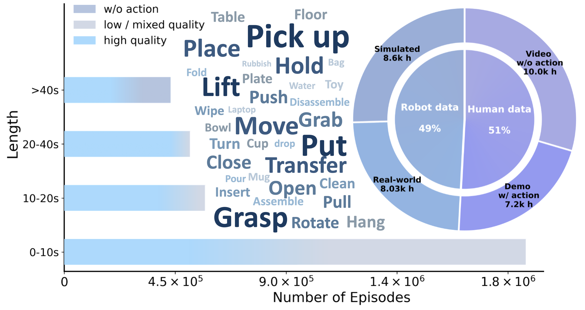
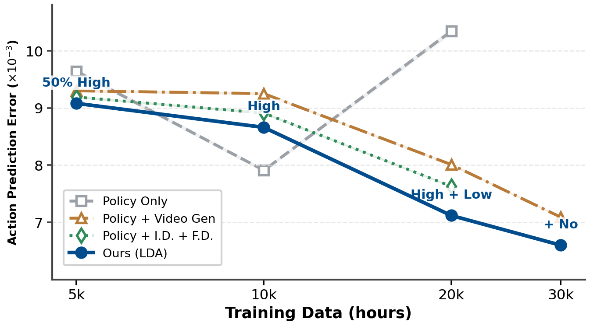
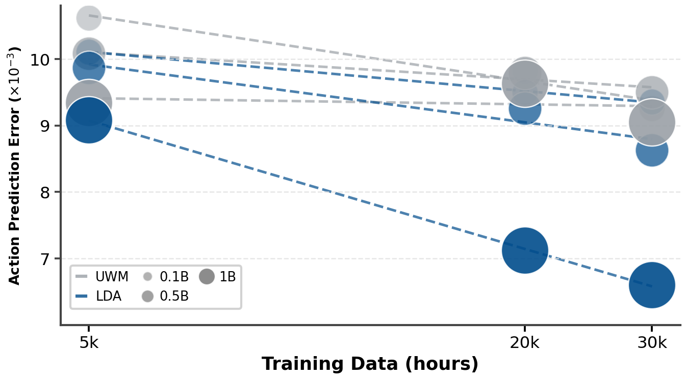
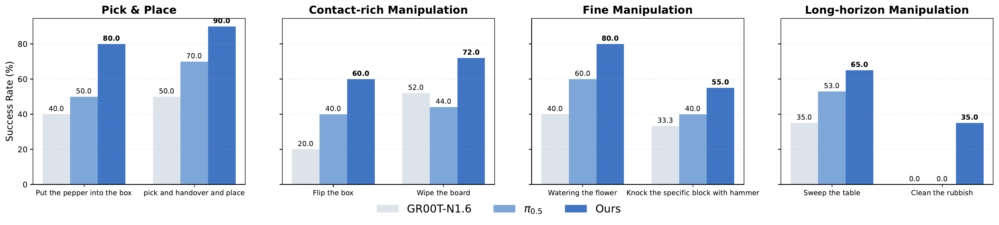
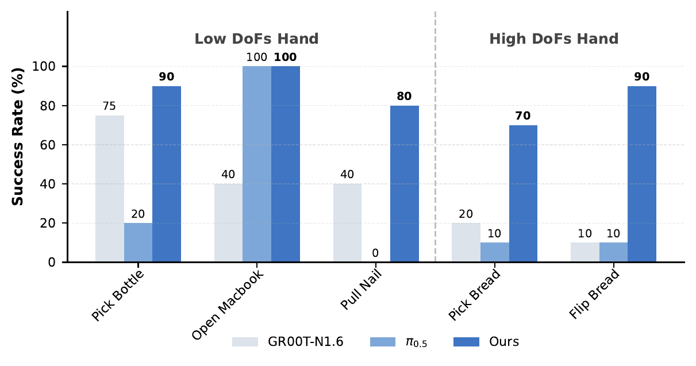
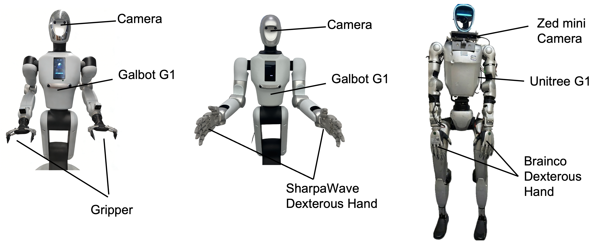

LDA -1B: Scaling Latent Dynamics Action Model via Universal Embodied Data Ingestion

Universal Embodied Data Ingestion
Unified Latent Dynamics and Policy Learning

The model jointly denoises action chunks and future DINO sequences within a unified multi-modal diffusion transformer framework. Heterogeneous data play distinct yet complementary roles for learning visual forecasting, dynamics learning and policy.
Large-scale Heterogeneous Embodied Data

We collect EI-30k, comprising more than 30k hours of diverse human and robot interaction data, which spans varying episode lengths and manipulation tasks.
Latent Forward Dynamics Visualization
Forward and inverse dynamics operate in a structured DINO latent space, which avoids redundant pixel-space appearance modeling and enables the model to focus on task-relevant dynamics features.
Scaling Analysis
Data Scaling: Universal Embodied Data Ingestion

LDA consistently degrades action prediction error from 5k to 30k hours data with cotraining all four tasks.
Model Scaling: Stable Large-Scale Training

LDA-1B scales stably thanks to latent dynamics and the mixed-frequency transformer.
Real-World Results


Real-World Demonstrations
Gripper Manipulation
Dexterous Manipulation with High-DoF Dexterous Hand
Dexterous Manipulation with Low-DoF Dexterous Hand
Robot Platforms

(1) Galbot G1 equipped with a standard two-finger parallel gripper for basic grasping tasks; (2) Galbot G1 fitted with the SharpaWave dexterous hand (22 DoF) for fine manipulation; (3) Unitree G1 mounted with the BrainCo dexterous hand (10 DoF) and a Zed Mini camera.
BibTeX
@article{lyu2026lda,
title={LDA-1B: Scaling Latent Dynamics Action Model via Universal Embodied Data Ingestion},
author={Lyu, Jiangran and Liu, Kai and Zhang, Xuheng and Liao, Haoran and Feng, Yusen and Zhu, Wenxuan and Shen, Tingrui and Chen, Jiayi and Zhang, Jiazhao and Dong, Yifei and others},
journal={arXiv preprint arXiv:2602.12215},
year={2026}
}